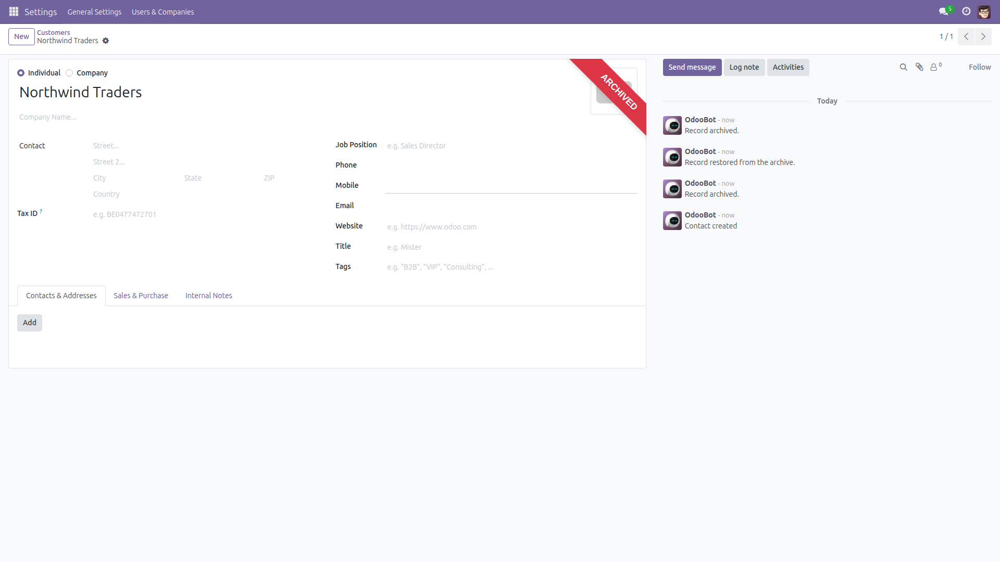

Know who archived it, and when.
"Where did that customer go?" Archiving hides a record from everyone in one click, and Odoo keeps no trace of who did it. This module posts a short note in the record's chatter every time it is archived or restored — the user and the moment, permanently. Free and open source (LGPL-3), Odoo 14.0 through 19.0.

Every archive and restore is written to the record’s chatter — who did it and exactly when, kept with the record forever.
mail module is required.archive_audit_trail.enabled to False.Identical behavior on every supported series (14.0 – 19.0).
Questions, bugs or feature requests?
Email f.ashraf.dev1@gmail.com — I read and answer every message.
License: LGPL-3 · Source on GitHub · Issues and contributions welcome.